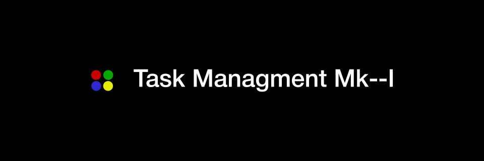
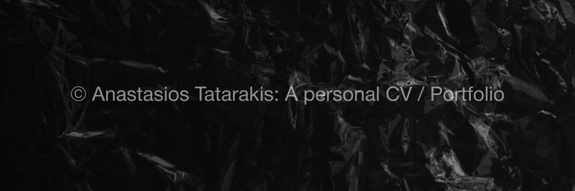

Intro
I am a web developer with a passion for creating and learning. My journey started with a Bachelor’s degree in Accounting and Finance from H.M.U. of Heraklion. This laid the foundation for my analytical skills. I then expanded my horizons by specializing in Investment Management at the University of Geneva, giving me a deep understanding of financial systems..
Driven by my interest in technology, I pursued an Associate's degree in Software Engineering and Web Development from the Public Vocational Institute of Rethymno. To further enhance my skills, I completed the IBM Full Stack Software Developer Professional Certificate. This combination of education has equipped me with a unique blend of financial insight and technical expertise, enabling me to develop innovative web solutions.
Looking ahead, I am thrilled about the prospect of moving to Copenhagen, Denmark to pursue my dreams in the tech industry. I aspire to join a forward-thinking team where I can contribute to cutting-edge projects and continue to grow as a developer. My goal is to create innovative solutions that make a difference and to be part of a dynamic and progressive environment.
Mandatory Military - Active Duty Service has been Completed
C2 Proficiency - Certificate of Proficiency in English (CPE)
Work Experience
IT Specialist, Creta Dental, Rethymno, Crete (October 2023 - April 2024)
Developed inventory management and appointment booking web applications using Laravel 10 & M.E.R.N. stack technologies. Designed and constructed websites using WordPress. Managed technical operations related to the clinic's advanced and high-value dental equipment..
Graphic Designer, Freelancing for Local Businesses, Rethymno, Crete (April 2023 - present)
Crafting graphic designs for business branding using Inkscape, Adobe Photoshop, Illustrator, Animate & Premier.
Bar Manager, Bonobo Bar, Rethymno, Greece (March 2018 - September 2023)
Managed daily operations, overseeing inventory and customer service.
Head Bartender, Plastelina, Heraklion, Greece (November 2016 - March 2018)
Built and led a diverse team, ensuring smooth workflow and high customer satisfaction.
Bartender, Parko - The Outdoor Experience, Heraklion, Greece (April 2016 - October 2016)
Acquired deeper knowledge of the hospitality industry.
Barista, Indigo, Heraklion, Greece (March 2013 - April 2016)
Adapted to high-pressure situations, ensuring efficient workflow.
Education
ASc. Software Engineering & Web Development
Public Vocational Institute, Rethymno, Crete (September 2022 - June 2024)
Bsc. Finance & Accounting
Hellenic Mediterranean University, Heraklion, Crete (September 2012 - June 2018)
Specializations
Full Stack Software Developer
IBM, (June 2023 - November 2023)
Investment & Wealth Management
University of Geneva, (December 2020 - July 2021)
Projects

Task Management App Mk--I
Task Management App Mk I is a comprehensive tool designed to help professionals & hobbyists organize their tasks efficiently. Built using Flask and SQLite, this application features user authentication, task creation, prioritization, and completion tracking. Users can easily create, update, delete, and sort tasks, as well as filter them by priority and completion status. The intuitive sidebar navigation and responsive design enhance the user experience, making it an essential tool for effective task management.
ProShop Mk--I
ProShop Mk I is a comprehensive E-commerce application built using the MERN stack (MongoDB, Express.js, React, Node.js). The application features a responsive and user-friendly interface, allowing users to browse, search, and view products with ease. The backend is designed to efficiently manage product data and support the frontend operations through a RESTful API. Key features include product listing, individual product cards, and a rotating carousel showcasing top products. Future enhancements include user authentication, a shopping cart, payment integration, product reviews, and an admin dashboard for managing products, users, and orders.

A.S.S.E.T. - Advanced System for Stock Efficiency & Tracking
>> Utilizing Laravel, this initiative exemplifies an innovative approach to web development, integrating an Inventory Management System with a dynamic company website. It offers robust features like Laravel Breeze authentication, multi-image uploads, and extensive reporting functionalities, underpinned by professional thematic design. This project adeptly bridges the gap between functionality and aesthetic appeal, offering a holistic web solution.
Custom WordPress Development & eCommerce Solutions
>> This project represents a seamless integration of custom WordPress site creation with a sophisticated WooCommerce-based eCommerce platform. Starting with WordPress, it covers everything from block type creation and custom themes to React.js basics and MySQL. Transitioning to WooCommerce, it culminates in the build-out of an expansive online store, including product management, design customization with Elementor, and secure payment setup, showcasing a full spectrum of web development skills.
Contact
Social Media Links
Connect with me on social media: